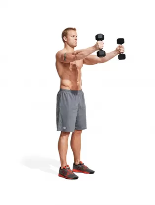
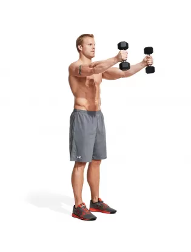

Shoulders 101

Seated Dumbbell Shoulder Press
(5 sets | 15, 12, 12, 10, 10)
Info: There will be 5 sets. Start with a weight you can focus on control for higher repetitions. Increase the weight 5-10% each set even if the reps remain the same.
Form: With an arched back sitting straight up, bring the dumbbells up so that they are straight above you with a straight arm. Bend your elbows outward until your elbows are just under a 90 degree angle and then press the weights back up so that they touch above your head.
 

Shrugs X Dumbbell Front Raise
(4 sets | 15-10, 12-10, 12-10, 10-10)
Info: There will be 4 sets. Start with a weight you can focus on control for higher repetitions. Start with shrugs and immediately after perform the dumbbell front raises. Increase the weight for the shrugs every set but keep the dumbbell weight the same.
Form: For the shrugs, grab two dumbells and hold them at your sides. With a straight arm, shrug your shoulders upward and slightly backward to focus the traps. Hold them at the top and the lower your shoulders slowly.
For the front raise, grab two dumbbells and hold them at your sides. With your palms facing toward each other, lift the dumbbells with a straight arm forward until the dumbells are above your head and then lower them.


Dumbbell Lateral Raise X Dumbbell Rear Lateral Raise
(4 sets | 15x15, 15x15, 12x12, 12x12)
Info: There will be 4 sets. Use a weight you can focus on control with. Perform the lateral raises followed by the rear delt raises directly afterwards. After 2 sets increase the weight 5-10% and decrease the repetitions.
Form: For the lateral raises, grab two dumbbells and hold them at your sides. With straight arms, raise the dumbbells to your sides until your body forms a “T” shape and then lower the dumbbells slowly to the starting position.
For the rear lateral raises, bend over so your torso is parallel with the ground. Let the dumbbells dead hang in front of you. With straight arms, extend them out to your sides so that at the top your arms are straight and are parallel with the ground and perpendicular with your body.

Arnold Press
(3 sets | 15, 12, 10)
Info: There will be 3 sets. Start with a weight you can focus on control for higher repetitions. Increase the weight 5-10% each set and lower the repetitions.
Form: Grab two dumbells and start with them above your head with your palms facing outward. As you lower the weights, turn your palms until they are facing toward you at the bottom and the dumbells are in front of your face. As you return the weights to the starting position, turn your palms outwards again.